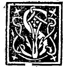

CAPITOLO XII¶
Del terzo suo singulare effecto.

Se vna quantità fia diuisa secondo la nostra proportione se ala menor sua parte se agionga la mita dela magiore sira poi el quadrato sempre del congionto quincuplo al quadrato dela mita de dieta màgiore. Verbi gratia. Sia 10. la quantità diuisa secondo la nostra diuina proportione che luna parte cioè la magiore sira R, i25. m. 5 eia menor i5. m. R. i25. Dico se sopra 1 5. m. R. i25. che e la menore sagionga la mita de R. 125 ni. 5. che e la magiore el congionto poi dela menore e de (lieta mita in se multiplieato sira 5 tanto del quadrato dela mlta de dieta magìore e così apare.
Pero che la mita de R. 125 m. 5. e R. 3 1 y m. 2 1/2 gionta con i5. ra. R. i25 che e la menore fa 12V2 m. R. 3 1 y. Onde multiplicando 1272 m. R. Biy via i2y2 m. R. 31 y fa i87y2 m. R. 1953174. E questo fìa dicto el quadrato del congiunto. Poi quadrise ancora la mita de dieta magiore cioè multiplica R. 317 m. 2Y2 via R. 31V4 m. 72 farà SyYa m. R. 78 ly. E questo fia detto el quadrato dela mita dela magiore quale aponto fia el ‘/■ del quadrato del congionto.
E per consequente dicto quadrato del congionto e quincuplo al quadrato dela mita de dieta parte magiore de io. cosi diuiso. La qual forza molto con laltre fìa da stimare, coramo tutto geometrice si proua per la terza del 13. del nostro auctore.